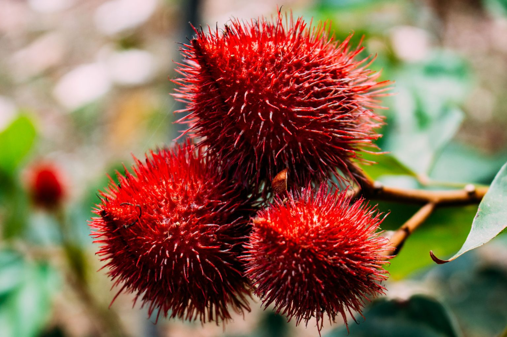

Repositório de Serviços Ecológicos
Há muito tempo, a Floresta Amazônica é reconhecida como um repositório de serviços ecológicos, não só para os povos indígenas e as comunidades locais, mas também para o restante do mundo.
Fabricação de Medicamentos
A biodiversidade presente na região amazônica também contribui para a fabricação de medicamentos, muitos dos quais podem ser encontrados na maioria dos lares brasileiros.
Filtragem de gás carbônico

Além de toda a variedade de espécies, o bioma é responsável pela filtragem e reprocessamento da produção mundial de gás carbônico (CO2). As árvores desempenham um papel-chave na redução dos níveis de poluição.